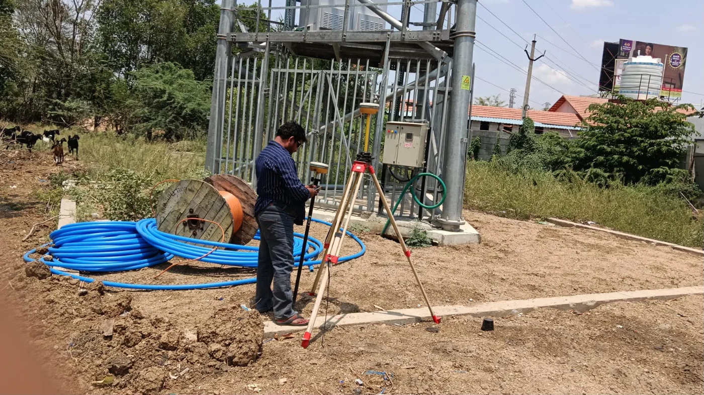
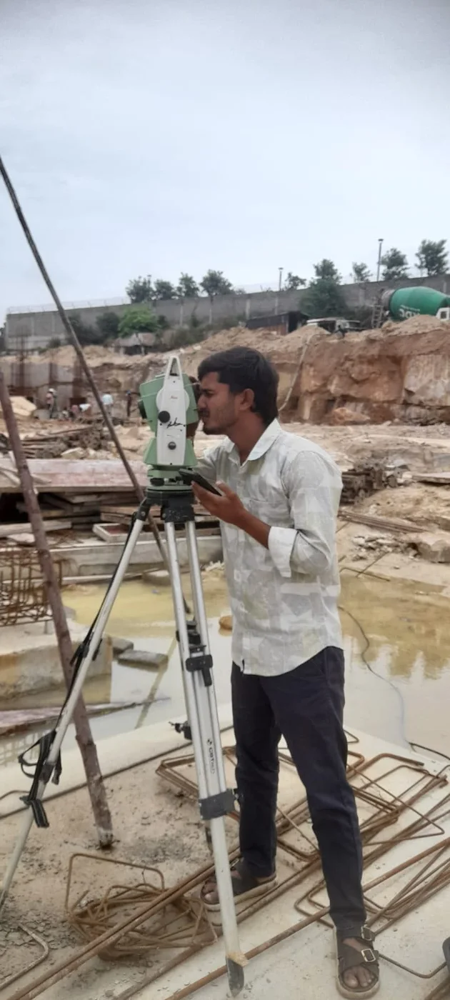

RNR CIVIL SURVEYORS · BOLLARAM
క్షేత్రస్థాయిలో మా సర్వే విధానం
బొల్లారం భూమి పంపకం సర్వే
బొల్లారం భూమిని నాలుగు వాటాలుగా విభజించిన తీరును 20 నవంబర్ 2026 నాటి డ్రాయింగ్ చూపిస్తుంది. ఈ సర్వేకు సంబంధించిన గ్రామ పటం, టిప్పన్, ఫీల్డ్ ఫొటోలు, కొలతలతో కూడిన పంపకం ప్లాన్ను కింద చూడవచ్చు.
గ్రామ సర్వే రికార్డులు


క్షేత్రస్థాయి కొలతలు





పంపకం ప్లాన్, వాటాల విస్తీర్ణాలు
| వాటా | ఎకరాలు | గుంటలు |
|---|---|---|
| A | 1 | 8.39 |
| B | 0 | 27 |
| C | 1 | 0 |
| D | 0 | 27.11 |
| మొత్తం విస్తీర్ణం | 3 | 31 |
నాలుగు వాటాల మొత్తం డ్రాయింగ్లో ఉన్న మొత్తం కంటే 8.50 గుంటలు తక్కువ. ఈ తేడాకు కారణం ఇంకా నిర్ధారించాల్సి ఉంది.
నా భూమికి పంపకం సర్వే కావాలి · WhatsApp +91 81062 29816